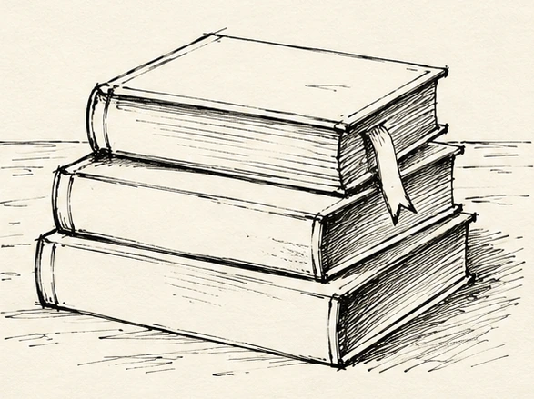
ВАШЕ ВРЕМЯ РИСОВАТЬ. БЕЗ СПЕШКИ.
Откройте
скетчбук.
Линер, карандаш и немного времени для себя. Приложение подскажет, с чего начать, а живые линии сложатся в вашу собственную историю на бумаге.
Попробовать урок с пиццей Посмотреть приложениеДля iPhone и iPad · iOS 17+ · Готовимся к App Store
СЕГОДНЯ НА БУМАГЕ06 / 06
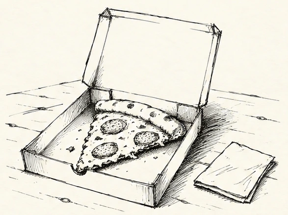
Немного неровно.
По-настоящему ваше.
83пошаговых урока
466этапов с рисунками
4направления
16языков приложения
С ЧЕГО НАЧАТЬ — И ЧТО ДЕЛАТЬ ДАЛЬШЕ
От первых линий
до маленькой сцены.
Начинаем с большой формы, а не с начинки. Выберите этап и посмотрите, как коробка, слайс, штриховка и фон постепенно собираются в рисунок.
Легко намечаем наклон основания и поднятую крышку. Оставляем вокруг место для стола.
Уточняем углы, толщину бортов и сгиб крышки. Не выравниваем каждую линию: это скетч.
Вписываем треугольную форму пиццы и отделяем корочку. Между слайсом и бортами оставляем воздух.
Добавляем начинку, неровный край сыра и короткие линии корочки. Детали не обязаны повторяться.
Штрихуем борт и край слайса, сгущаем тень под корочкой. Свет оставляем сверху слева.
Добавляем фактуру стола, салфетку и последние акценты. Часть линий оставляем лёгкими и прерывистыми.
В приложении к каждому этапу есть объяснение и подсказка, что проверить.
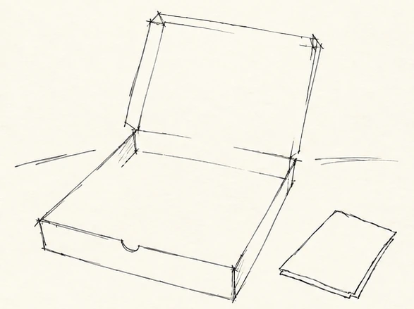
ЧТО НАРИСУЕМ СЕГОДНЯ?
Обычные вещи.
Необычные узоры.
Быстрые контуры, заметная штриховка, немного неидеальности. Здесь — настоящие рисунки из обновлённых уроков приложения.
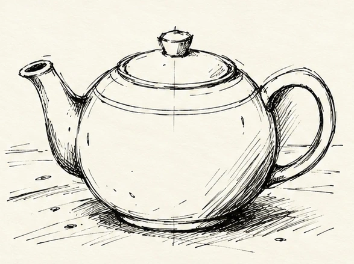
Чайник с круглым боком
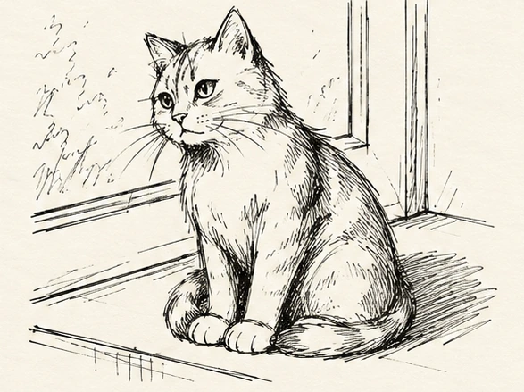
Кот на подоконнике
Космическая открытка
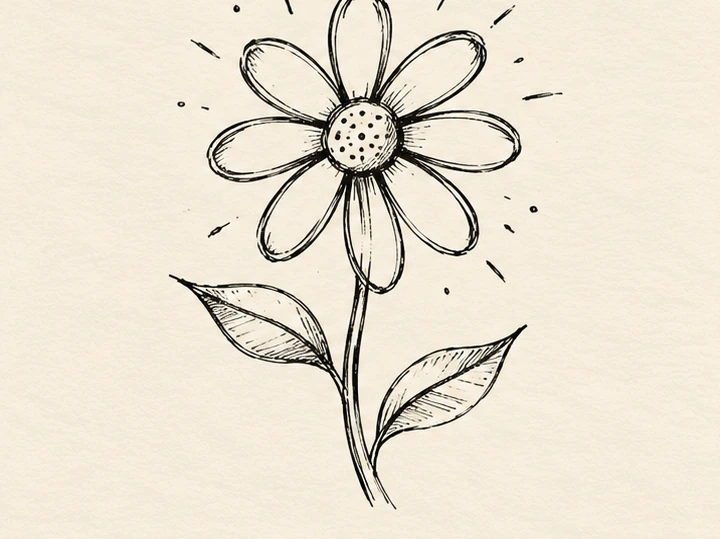
Цветок одним настроением
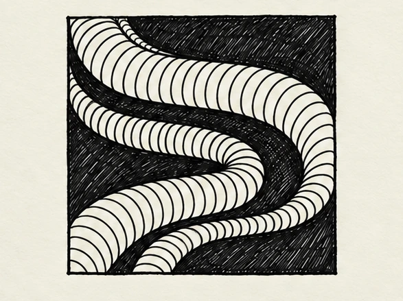
Ленты из живых дуг
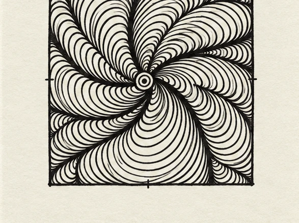
Веерная спираль
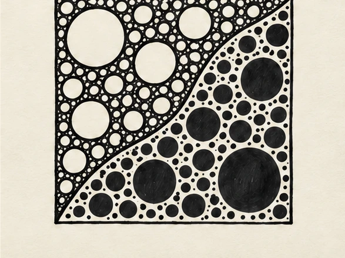
Круги: свет и темнота
Еда · Природа · Животные · Предметы · Интерьер · Места · Фантазия · Узоры · Основы
ВАША ТИХАЯ МАСТЕРСКАЯ
Урок рядом.
Скетчбук — перед вами.
Начните с короткой разминки, выберите сюжет, изучите этапы. Можно увеличивать рисунок и возвращаться к нему в своём темпе.
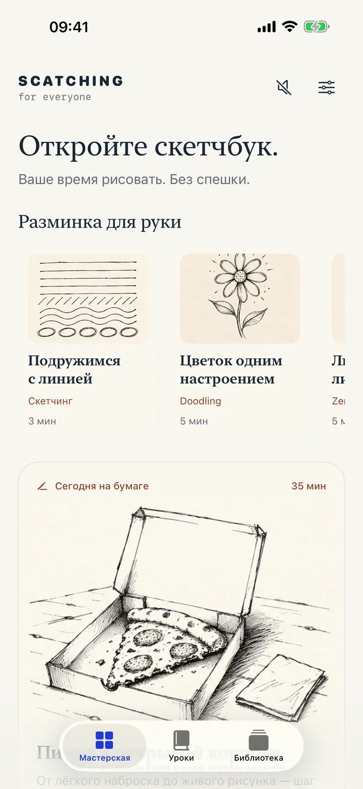
Разминки и сюжет на сегодня
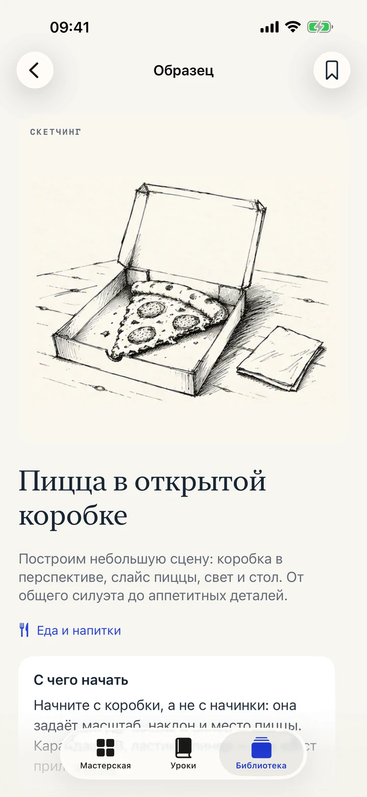
Материалы, шаги и подсказки
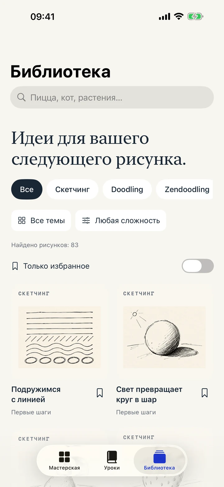
Образцы для новых идей
СНАЧАЛА БУМАГА, ПОТОМ ВСЁ ОСТАЛЬНОЕ
Рисуйте рукой.
Оставляйте свой почерк.
Не нужно повторять каждую линию. Смотрите на образец, замечайте форму и рисуйте в своём скетчбуке. Холст в приложении пригодится, когда хочется попробовать идею на экране.
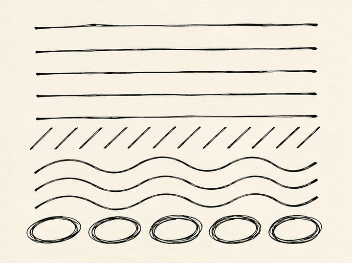
- 01
Разминка на 3–5 минут
Линии, дуги и простые узоры помогут начать без страха чистого листа.
- 02
Только нужные материалы
В разделе «Инвентарь» — бумага, карандаш, ластик и линеры. В уроках есть подсказки для подготовки.
- 03
Спокойный фон
Мягкая музыка Soft Lofi включается по желанию. Уроки и музыка доступны офлайн.
На iPad можно рисовать Apple Pencil на встроенном холсте.
FULL STUDIO
Одна покупка.
Много своих рисунков.
Начните с четырёх бесплатных уроков — по одному на каждое направление. Все образцы в библиотеке можно просматривать бесплатно.
4,99 €
Полная мастерская
Разовая покупка открывает все 83 урока. Без подписки, автоматических продлений и рекламы.
Начать с примера урокаApp Store покажет цену в вашей валюте до оплаты. Цена может отличаться по регионам.
Перед первым рисунком
Я совсем не умею рисовать. Подойдёт?
Да. Начните с бесплатных разминок и простых форм, затем переходите к более подробным сюжетам. Уроки объясняют, с чего начать и на что обратить внимание.
Обязательно рисовать на экране?
Нет. Основной формат — урок на iPhone или iPad и рисунок в вашем скетчбуке. Встроенный холст остаётся дополнительным способом практики; на iPad он поддерживает Apple Pencil.
Что работает без интернета?
Уроки, образцы, рисунки этапов, холст и встроенная музыка. Интернет нужен для покупки и восстановления доступа через App Store.
Мои рисунки куда-то отправляются?
Нет. Рисунки, избранное и прогресс хранятся на устройстве. В приложении нет аккаунтов, рекламы, аналитики и публичной галереи.
Можно восстановить покупку?
Откройте «Восстановить покупку» в настройках с тем же аккаунтом Apple. Это восстановит оплаченный доступ без повторной оплаты, но не перенесёт локальные рисунки.